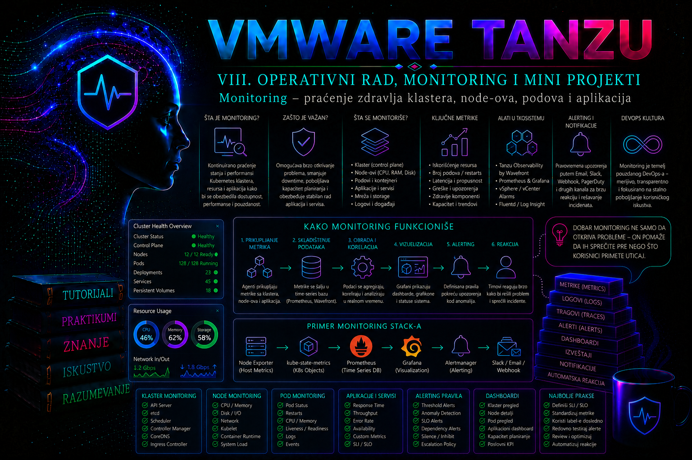

VMware & Tanzu

Monitoring Kubernetes i VMware Tanzu okruženja predstavlja kontinuirano prikupljanje, povezivanje i tumačenje podataka o stanju platforme i aplikacija. Njegov cilj nije samo prikaz grafikona, već rano otkrivanje odstupanja, pouzdana dijagnostika incidenata, procena kapaciteta i potvrda da platforma ispunjava dogovorene ciljeve dostupnosti i performansi. Administrator mora da posmatra čitav lanac izvršavanja: infrastrukturne resurse u vSphere okruženju, stanje Kubernetes control plane-a, zdravlje node-ova, ponašanje podova, mrežnu dostupnost servisa i rezultate koje aplikacija pruža korisniku.
Kubernetes sam po sebi ne isporučuje kompletno dugoročno monitoring rešenje. API server izlaže stanje deklarativnih objekata, kubelet i druge komponente objavljuju operativne metrike, Events beleže ograničen skup promena, a Metrics API može da obezbedi kratkoročne podatke o CPU i memorijskoj potrošnji. Za istoriju, korelaciju, upozoravanje i analizu trendova potreban je poseban observability sloj, najčešće zasnovan na Prometheus kompatibilnom prikupljanju metrika, Alertmanager-u, Grafani i centralizovanom sistemu za logove. U Tanzu okruženju ovaj sloj mora biti usklađen sa konkretnim proizvodom, verzijom, modelom implementacije i podržanim paketima.
Monitoring, observability i administratorska odgovornost
Monitoring odgovara na unapred definisana pitanja: da li je node dostupan, koliko CPU resursa troši pod, da li je broj grešaka prešao prag i da li je endpoint aplikacije dostupan. Observability je širi koncept i omogućava zaključivanje o unutrašnjem stanju sistema na osnovu metrika, logova i tragova izvršavanja. Metrike pokazuju količinu i trend, logovi daju kontekst događaja, dok distribuirani tragovi prikazuju tok zahteva kroz više servisa. Nijedan od ova tri izvora nije dovoljan sam za sebe.
Administratorska odgovornost počinje definisanjem onoga što mora biti vidljivo. Platformski tim obično prati infrastrukturu, control plane, node-ove, sistemske namespace-ove, kapacitet i dostupnost monitoring sistema. Aplikacioni tim prati poslovne i aplikacione pokazatelje, latenciju, greške i zavisnosti. Bezbednosni tim prati audit događaje, promene privilegija i sumnjive obrasce pristupa. Granice moraju biti dokumentovane, jer alarm bez vlasnika nije operativna kontrola već samo poruka koju možda niko neće obraditi.
Zdravlje sistema ne može se svesti na jednu zelenu oznaku. Pod može biti u stanju Running, a da aplikacija ne prihvata zahteve. Node može biti Ready, ali pod snažnim pritiskom memorije. Servis može imati endpoint-e, dok svi zahtevi završavaju greškom zbog nedostupne baze podataka. Monitoring zato mora kombinovati stanje Kubernetes objekata, korišćenje resursa, funkcionalne probe, aplikacione metrike i spoljne testove dostupnosti.
Slojevi koji se prate u VMware Tanzu okruženju
U referentnom okruženju ove lekcije koristi se vSphere Kubernetes platforma sa jednim workload klasterom tkg-prod-01. Klaster ima tri control plane node-a kojima upravlja platforma i tri worker node-a: tkg-prod-01-worker-01, tkg-prod-01-worker-02 i tkg-prod-01-worker-03. Aplikacija web-api radi u namespace-u prod-web, dok se monitoring komponente nalaze u namespace-u monitoring.
| Sloj | Šta se prati | Primer simptoma | Prva provera |
|---|---|---|---|
| vSphere infrastruktura | Stanje ESXi hostova, VM-ova, datastore-a, mreže i resursnih pool-ova | Kubernetes node kasni ili postaje nedostupan zbog problema virtuelne mašine | vSphere Client alarmi, VM status, datastore latencija i resursi hosta |
| Control plane | API server, scheduler, controller manager, etcd i platformeske komponente | Spori API pozivi, neuspešno zakazivanje ili kašnjenje kontrolera | kubectl get --raw='/readyz?verbose' i platformski status klastera |
| Node | Ready stanje, CPU, memorija, disk, PID, mreža, kubelet i container runtime | MemoryPressure, DiskPressure, prekidi heartbeat-a |
kubectl get nodes i kubectl describe node |
| Pod i workload | Faze podova, restarti, probe, scheduling, resursi i rollout | CrashLoopBackOff, Pending, OOM ili neuspešna readiness proba |
kubectl get pods, Events i logovi kontejnera |
| Servis i mreža | Endpoint-i, DNS, latencija, greške i dostupnost sa korisničke strane | Servis postoji, ali nema spremne endpoint-e ili DNS ne radi | kubectl get endpointslices i funkcionalni zahtev iz test poda |
| Aplikacija | Broj zahteva, trajanje, stopa grešaka, redovi, konekcije i poslovni pokazatelji | Povećanje HTTP 5xx odgovora bez visokog CPU opterećenja | PromQL upiti, dashboard i aplikacioni logovi |
Kod upravljanih Tanzu i vSphere Kubernetes implementacija administrator ne sme pretpostaviti da ima isti nivo pristupa svim control plane komponentama kao u samostalno instaliranom Kubernetes klasteru. Direktan pristup control plane virtuelnim mašinama, promena statičkih podova ili ručno menjanje konfiguracije sistemskih komponenti može biti nepodržano. Dijagnostika se prvenstveno obavlja kroz podržane Kubernetes, vSphere i platformske interfejse, a intervencije u upravljanom control plane-u eskaliraju se u skladu sa procedurom proizvođača.
Metrike klastera i Metrics API
Metrics Server prikuplja kratkoročne podatke o CPU i memorijskoj potrošnji node-ova i podova i objavljuje ih kroz metrics.k8s.io API. Komande kubectl top node i kubectl top pod koriste upravo taj API. Ovi podaci su namenjeni trenutnom uvidu i mehanizmima poput Horizontal Pod Autoscaler-a, a ne dugoročnoj analizi, alertingu ili čuvanju istorije. Kubernetes 1.37 je uveo stabilnu verziju metrics.k8s.io/v1; klasteri zasnovani na ranijim, za konkretno VKS izdanje podržanim Kubernetes verzijama i dalje uobičajeno izlažu v1beta1. Zato se verzija ne pretpostavlja: najpre se proveravaju API discovery i VKS compatibility matrix, a manifesti i provere prilagođavaju stvarno podržanoj verziji.
kubectl api-resources --api-group=metrics.k8s.io
kubectl get apiservice | grep metrics.k8s.io
kubectl top nodes
kubectl top pods -A --sort-by=memory
Ako kubectl top ne radi, to ne znači automatski da node nema metrike ili da je klaster neispravan. Potrebno je proveriti da li je Metrics API registrovan, da li Metrics Server radi, da li može da pristupi kubelet endpoint-ima i da li TLS, DNS ili mrežna pravila blokiraju komunikaciju. U Tanzu distribucijama način instalacije i vlasništvo nad Metrics Server komponentom zavise od verzije i izdanja, pa se ne sme nasumično instalirati druga instanca bez provere postojeće platformeske konfiguracije.
Vrednosti CPU potrošnje prikazuju se u jezgrima ili millicore jedinicama. Vrednost 250m predstavlja četvrtinu jednog CPU jezgra. Memorija se prikazuje kao radni skup, a ne kao jednostavna razlika između ukupne i slobodne memorije. Administrator zato ne treba da upoređuje rezultate različitih alata bez razumevanja njihove definicije i trenutka uzorkovanja.
Prometheus, Alertmanager i Grafana
Prometheus periodično preuzima metrike sa definisanih HTTP endpoint-a, čuva ih kao vremenske serije i omogućava upite pomoću jezika PromQL. Svaka serija ima naziv metrike i skup labela. Na primer, broj HTTP zahteva može biti razdvojen prema namespace-u, aplikaciji, metodi i statusnom kodu. Ovakav model omogućava preciznu analizu, ali nekontrolisan broj labela stvara veliki broj vremenskih serija i povećava potrošnju memorije, diska i procesorskih resursa.
Prometheus Operator, kada je deo izabranog i podržanog monitoring rešenja, uvodi prilagođene resurse kao što su Prometheus, ServiceMonitor, PodMonitor, PrometheusRule i Alertmanager. ServiceMonitor opisuje koje Kubernetes servise i portove treba nadgledati, dok PrometheusRule sadrži recording i alerting pravila. Operator zatim generiše odgovarajuću Prometheus konfiguraciju. Ako CRD-ovi nisu instalirani, kreiranje ovih objekata neće uspeti.
Nazivi paketa, namespace-ova i objekata nisu isti u svim Tanzu generacijama. Dokumentacija za stariji standalone Tanzu Kubernetes Grid 2.5 opisuje workload pakete Prometheus i Grafana, dok VKS Standard Packages u VMware Cloud Foundation 9.x imaju sopstvene verzije, release notes i lifecycle. Instalacija standardnog Prometheus paketa može koristiti namespace tanzu-system-monitoring i ne mora odgovarati Operator topologiji iz ovog praktikuma. Zato je praktikum izričito Operator scenario nad unapred potvrđenom instalacijom; nije generičko uputstvo za instaliranje ili prepravljanje VKS standardnog paketa. Pre rada proveravaju se VCF/VKS verzija, package repository, instalirani CRD-ovi, stvarni namespace, selektori i matrica kompatibilnosti.
Alertmanager prima aktivne alarme od Prometheus servera, grupiše ih, uklanja duplikate, primenjuje inhibicije i prosleđuje obaveštenja prema definisanim kanalima. Alertmanager ne rešava incident i ne dokazuje da je poruka obrađena. Produkciona procedura mora da definiše primaoca, dežurstvo, eskalacioni rok i način zatvaranja incidenta. Za testiranje se koriste bezbedni testni receiver-i; stvarni webhook URL-ovi, tokeni i lozinke čuvaju se u odgovarajućem sistemu za tajne i ne unose se u javne manifest datoteke.
Grafana prikazuje podatke iz Prometheus-a i drugih izvora. Dashboard nije izvor istine već vizuelni prikaz upita. Nakon nadogradnje metrike mogu promeniti naziv, labele ili semantiku, zbog čega dashboard može izgledati prazan iako Prometheus radi. Svaki kritičan panel zato mora imati dokumentovan PromQL izraz, vlasnika i postupak validacije direktno u Prometheus interfejsu ili API-ju.
Praćenje zdravlja node-ova
Kubelet redovno ažurira stanje node-a i lease objekat. Control plane na osnovu tih signala određuje da li je node dostupan. Osnovna provera počinje pregledom očekivanog broja node-ova, njihovih uloga, Kubernetes verzija i Ready stanja.
kubectl get nodes -o wide
kubectl get nodes -L topology.kubernetes.io/zone,node.kubernetes.io/instance-type
kubectl describe node tkg-prod-01-worker-01
U odeljku Conditions očekuje se Ready=True, dok su MemoryPressure, DiskPressure, PIDPressure i NetworkUnavailable u normalnom stanju obično False. Jednokratna promena ne mora predstavljati incident, ali trajanje, učestalost i uticaj određuju prioritet. DiskPressure=True može dovesti do evikcije podova, neuspešnog preuzimanja image-a i rada kubelet garbage collection mehanizma. MemoryPressure=True ukazuje da node raspolaže malom količinom dostupne memorije i može prethoditi evikcijama ili OOM događajima.
Visoka iskorišćenost nije isto što i zasićenje. CPU na 90% može biti prihvatljiv ako nema dugih perioda čekanja i aplikacija ispunjava SLO, dok memorijska potrošnja od 70% može biti problem ako raste bez granice. Prate se trend, pritisak, throttling, evikcije i latencija, a ne samo procenat. U virtuelizovanom okruženju potrebno je korelisati Kubernetes metrike sa vSphere pokazateljima kao što su CPU ready, memorijska konkurencija, datastore latencija i mrežne greške virtuelne mašine.
Ako node prestane da šalje status, administrator najpre proverava vSphere stanje njegove virtuelne mašine, mrežnu dostupnost, DNS i vreme. Tek zatim se prelazi na kubelet i container runtime logove. Ručno restartovanje node-a bez prikupljanja dokaza može privremeno vratiti servis, ali uklanja tragove potrebne za utvrđivanje uzroka i može dodatno smanjiti kapacitet klastera.
Praćenje podova, Deployment-a i aplikacija
Status poda mora se tumačiti zajedno sa stanjem njegovih kontejnera. Running znači da je pod vezan za node i da je najmanje jedan kontejner pokrenut ili se pokreće; ne znači da je aplikacija spremna za saobraćaj. Readiness proba određuje da li endpoint sme da prima zahteve, liveness proba može pokrenuti restart kontejnera, a startup proba štiti sporo pokretanje od preuranjene liveness intervencije.
kubectl get pods -n prod-web -o wide
kubectl get deployment web-api -n prod-web
kubectl rollout status deployment/web-api -n prod-web
kubectl get events -n prod-web --sort-by=.metadata.creationTimestamp
Broj restarta posmatra se u kontekstu vremena i razloga. Jedan restart posle planirane promene nije isto što i deset restartovanja u pet minuta. Komanda kubectl describe pod može prikazati OOMKilled, neuspešnu probu, problem sa mount-ovanjem volumena ili image-om. Za prethodno prekinuti kontejner koristi se opcija --previous, jer tekući log više ne sadrži izlaz prethodne instance.
kubectl describe pod -n prod-web <NAZIV_PODA>
kubectl logs -n prod-web <NAZIV_PODA> -c web-api --previous
kubectl get pod -n prod-web <NAZIV_PODA> -o jsonpath='{.status.containerStatuses[*].lastState}'Requests i limits utiču na scheduling i ponašanje pod opterećenjem. Nedovoljni requests omogućavaju preveliku konsolidaciju podova na node-u, dok prenizak memory limit izaziva OOM prekide. CPU limit može izazvati throttling i povećanu latenciju čak i kada node ima slobodan CPU. Monitoring mora upoređivati stvarnu potrošnju sa requests i limits vrednostima, ali se promene resursa donose na osnovu reprezentativnog istorijskog perioda i testiranja, a ne jednog trenutnog uzorka.
Za aplikaciju se preporučuje kombinovanje takozvanih golden signals: latencije, saobraćaja, grešaka i zasićenja. Broj podova ili CPU potrošnja ne dokazuju da korisnik dobija ispravan odgovor. Funkcionalni monitoring mora slati zahtev kroz isti ili dovoljno sličan put kao stvarni korisnik i proveravati status, trajanje i, kada je bezbedno, očekivani sadržaj odgovora.
Bazna linija, SLI, SLO i error budget
Bazna linija nije jedan „normalan” broj, već dokumentovan opseg ponašanja sistema u reprezentativnim periodima: radni i neradni dan, vršno i mirno opterećenje, planirani batch poslovi, backup prozor i period posle rollout-a. Za svaku važnu metriku beleže se agregacija, period uzorkovanja, percentil, vremenska zona, verzija aplikacije i poznate promene. Poređenje današnjeg maksimuma sa jučerašnjim prosekom nema operativnu vrednost; porede se iste definicije i slični poslovni periodi.
Service Level Indicator (SLI) je merena karakteristika usluge, na primer udeo uspešnih HTTP zahteva ili latencija 95. percentila. Service Level Objective (SLO) određuje cilj za taj pokazatelj tokom definisanog prozora. Error budget je dozvoljeni deo neuspešnih događaja: za SLO od 99,9% dostupnosti u prozoru od 30 dana budžet je 0,1% relevantnih zahteva. To nije automatski isto što i 43,2 minuta prekida, osim kada je SLI strogo vremenski i usluga se meri bez prekida tokom celog prozora.
error_budget_ratio = 1 - SLO
availability_ratio = successful_events / valid_events
request_utilization = sum(workload_requests) / sum(node_allocatable)
capacity_headroom = 1 - request_utilizationAlarmi zasnovani na potrošnji error budget-a mogu koristiti više prozora i različite burn-rate pragove: kratak prozor brzo otkriva intenzivan kvar, a duži potvrđuje da nije reč o prolaznom šumu. Konkretni pragovi zavise od SLO-a, obima saobraćaja i organizacionog procesa reagovanja; ne prepisuju se mehanički iz tuđeg dashboard-a. Za servise sa malim brojem zahteva sintetička provera i vremenski SLI mogu biti pouzdaniji od procenta grešaka nad premalim uzorkom.
Kapacitet, headroom i prognoziranje
Kapacitet klastera procenjuje se iz više pogleda. Kubernetes scheduler odlučuje prema deklarisanim requests vrednostima i ograničenjima, dok stvarna potrošnja pokazuje ponašanje workload-a. vSphere zatim pokazuje da li virtuelna infrastruktura zaista može da isporuči dodeljene resurse. Zbog toga se odvojeno prate allocatable kapacitet, zbir requests i limits vrednosti, stvarna potrošnja, topološka raspodela, broj i veličina podova koji ne mogu da se zakažu, kao i infrastrukturni signali CPU ready, memorijske konkurencije i storage latencije.
| Odluka | Dokazi | Rizik pogrešnog tumačenja | Kriterijum |
|---|---|---|---|
| Dodavanje worker node-a | Requests prema allocatable kapacitetu, Pending podovi, rast potrošnje, vSphere rezerva | Node ne rešava kvotu, pogrešan selector, taint ili nedostupnu zonu | Klaster i posle gubitka najveće dozvoljene failure domene može da zakaže kritične workload-e |
| Povećanje requests vrednosti | Percentili potrošnje, throttling, OOM, SLO i test opterećenja | Prevelik request smanjuje gustinu i može stvoriti lažan manjak kapaciteta | Scheduling je stabilan, a rezervacija prati dokazanu potrebu i politiku rezerve |
| Povećanje limita | OOM ili throttling, profil aplikacije, node headroom | Samo pomera kvar na node ili prikriva memory leak | Promena prolazi test opterećenja bez degradacije susednih workload-a |
| Proširenje storage-a | Slobodan prostor, stopa rasta, retencija, compaction i forecast | Linearno predviđanje promašuje skok posle promene kardinalnosti | Vreme do popunjavanja je duže od vremena nabavke, odobrenja i bezbedne implementacije |
Produkciona rezerva mora obuhvatiti planirani rast, autoscaling kašnjenje, rollout sa dodatnim replikama i deklarisani kvar, na primer gubitak jednog worker node-a ili jedne zone. Prosek preko celog klastera može sakriti da je jedna zona puna ili da workload zbog affinity pravila može da koristi samo deo node-ova. Prometheus predict_linear() može pomoći pri proceni trenda diska, ali rezultat nije garancija: sezonalnost, retencija, compaction i nagla promena kardinalnosti moraju se posebno proveriti.
Alarmi, pragovi i smanjenje šuma
Dobar alarm označava stanje koje zahteva konkretnu ljudsku reakciju. Alarm ne treba da se aktivira zbog svakog kratkog odstupanja, niti da zavisi samo od jednog infrastrukturnog procenta. Za kritične aplikacije korisniji je alarm o povećanoj stopi neuspešnih zahteva i kršenju SLO-a nego alarm da je CPU jednog poda prešao 80%.
Alerting pravilo obično koristi vremenski uslov for, čime se sprečava aktiviranje zbog kratkog prolaznog događaja. Ipak, predug period može odložiti reakciju na stvarni kvar. Uslov se bira prema prirodi signala. Nedostupan API server zahteva brzu reakciju, dok se na rast disk potrošnje može reagovati na osnovu trenda i procenjenog vremena do popunjavanja.
Svaki produkcioni alarm treba da sadrži ozbiljnost, naziv pogođenog klastera i namespace-a, sažetak simptoma, vezu ka runbook-u i identitet tima koji reaguje. Alarm ne sme sadržati tajne ili osetljive podatke. Posle incidenta proverava se da li je alarm aktiviran dovoljno rano, da li je bio razumljiv i da li je doveo do ispravne akcije. Alarmi koji se stalno ignorišu moraju se popraviti ili ukloniti.
Integrisani praktikum – monitoring aplikacije i dijagnostika degradacije
Poslovni i tehnički kontekst. Produkciona aplikacija web-api pruža HTTP servis internim korisnicima. Platformski tim mora da obezbedi pregled CPU i memorijske potrošnje, dostupnosti replika, broja HTTP zahteva i stope grešaka. U klasteru tkg-prod-01 već postoji podržana Prometheus Operator instalacija u namespace-u monitoring. Praktikum uvodi nadgledanu testnu aplikaciju, ServiceMonitor i dva upozorenja, a zatim simulira kvar readiness probe.
Cilj. Nakon implementacije Prometheus mora da otkrije aplikacioni metrics endpoint, prikuplja metrike i aktivira alarm kada nema spremnih replika. Administrator mora da razlikuje kvar aplikacije od kvara samog monitoring lanca.
Referentno okruženje i prava. Koristi se postojeći kubeconfig kontekst tkg-prod-01-admin@tkg-prod-01. Za laboratorijski scenario potreban je nalog koji može da kreira namespace, Deployment, Service, ConfigMap, ServiceMonitor i PrometheusRule. U produkciji se ove privilegije razdvajaju: aplikacioni tim upravlja objektima u prod-web, dok monitoring tim odobrava monitoring CRD objekte i pravila. Promene se izvršavaju kroz verzionisani repozitorijum i odobren change zahtev.
Preduslovi. Dostupni su kubectl, pristup klasteru, Metrics API i Prometheus Operator CRD-ovi. Image nginx:1.27-alpine u ovom praktikumu predstavlja bezbedan laboratorijski primer; produkciono okruženje mora koristiti odobren interni registry, skenirani image i verziju podržanu organizacionom politikom.
-
Proveriti kontekst, stanje klastera i monitoring preduslove.
Pre promene se potvrđuje da komande ciljaju pravi klaster i da su očekivani node-ovi spremni. Zatim se proverava Metrics API i prisustvo Prometheus Operator CRD-ova.
Validacija: trenutni kontekst mora bitikubectl config current-context kubectl cluster-info kubectl get nodes kubectl get apiservice | grep metrics.k8s.io kubectl get crd servicemonitors.monitoring.coreos.com prometheusrules.monitoring.coreos.com kubectl get pods -n monitoringtkg-prod-01-admin@tkg-prod-01, sva tri worker node-a moraju imatiReadystanje, Metrics API mora biti dostupan, oba CRD-a moraju postojati, a ključni monitoring podovi moraju bitiRunningi spremni. Ako CRD-ovi ne postoje, praktikum se prekida; ne instalira se proizvoljan Operator preko postojeće Tanzu platforme. -
Napraviti namespace i osnovnu aplikacionu konfiguraciju.
Kreira se namespace
prod-webi ConfigMap sa NGINX konfiguracijom. Endpoint/healthzvraća status 200, dok/metricsizlaže jednostavne Prometheus tekstualne metrike namenjene demonstraciji.
Validacija: namespace mora imati očekivane labele, a ConfigMap ključcat > prod-web-base.yaml <<'EOF' apiVersion: v1 kind: Namespace metadata: name: prod-web labels: environment: production monitoring: enabled --- apiVersion: v1 kind: ConfigMap metadata: name: web-api-config namespace: prod-web data: default.conf: | server { listen 8080; location / { default_type text/plain; return 200 "web-api available\n"; } location /healthz { default_type text/plain; return 200 "ok\n"; } location /metrics { default_type text/plain; return 200 '# HELP web_api_up Application availability\n# TYPE web_api_up gauge\nweb_api_up 1\n# HELP web_api_requests_total Demonstration request counter\n# TYPE web_api_requests_total counter\nweb_api_requests_total{code="200"} 100\nweb_api_requests_total{code="500"} 2\n'; } } EOF kubectl apply -f prod-web-base.yamldefault.confmora biti prisutan.kubectl get namespace prod-web --show-labels kubectl get configmap web-api-config -n prod-web -o yaml -
Implementirati Deployment i Service.
Deployment koristi tri replike, resursne requests i limits vrednosti, security context i sve tri vrste probe. Service objavljuje imenovani port
http-metrics, koji će kasnije koristiti ServiceMonitor.
Validacija: Deployment mora imati tri dostupne replike, podovi moraju biti spremni, a EndpointSlice mora sadržati tri spremna endpoint-a.cat > prod-web-workload.yaml <<'EOF' apiVersion: apps/v1 kind: Deployment metadata: name: web-api namespace: prod-web labels: app.kubernetes.io/name: web-api spec: replicas: 3 selector: matchLabels: app.kubernetes.io/name: web-api template: metadata: labels: app.kubernetes.io/name: web-api spec: automountServiceAccountToken: false securityContext: runAsNonRoot: true runAsUser: 101 runAsGroup: 101 fsGroup: 101 seccompProfile: type: RuntimeDefault containers: - name: web-api image: nginx:1.27-alpine ports: - name: http-metrics containerPort: 8080 resources: requests: cpu: 50m memory: 32Mi limits: cpu: 250m memory: 128Mi securityContext: allowPrivilegeEscalation: false capabilities: drop: - ALL startupProbe: httpGet: path: /healthz port: http-metrics failureThreshold: 30 periodSeconds: 2 readinessProbe: httpGet: path: /healthz port: http-metrics periodSeconds: 5 failureThreshold: 3 livenessProbe: httpGet: path: /healthz port: http-metrics periodSeconds: 10 failureThreshold: 3 volumeMounts: - name: config mountPath: /etc/nginx/conf.d/default.conf subPath: default.conf readOnly: true - name: cache mountPath: /var/cache/nginx - name: run mountPath: /var/run volumes: - name: config configMap: name: web-api-config - name: cache emptyDir: {} - name: run emptyDir: {} --- apiVersion: v1 kind: Service metadata: name: web-api namespace: prod-web labels: app.kubernetes.io/name: web-api spec: selector: app.kubernetes.io/name: web-api ports: - name: http-metrics port: 8080 targetPort: http-metrics EOF kubectl apply -f prod-web-workload.yaml kubectl rollout status deployment/web-api -n prod-web --timeout=180skubectl get deployment,pods,service,endpointslices -n prod-web -o wide kubectl get deployment web-api -n prod-web \ -o jsonpath='desired={.spec.replicas} available={.status.availableReplicas}{"\n"}' -
Izvršiti funkcionalni test bez izlaganja servisa izvan klastera.
Privremeni test pod šalje zahtev prema Kubernetes DNS imenu servisa. Time se istovremeno proveravaju scheduling, DNS, Service, EndpointSlice, mrežna putanja i aplikacioni odgovor.
Validacija: komanda mora vratitikubectl run web-api-check \ -n prod-web \ --image=curlimages/curl:8.12.1 \ --restart=Never \ --rm -i \ --command -- curl --fail --silent --show-error \ http://web-api.prod-web.svc.cluster.local:8080/healthzoki završiti izlaznim kodom 0. Ako DNS ime ne može da se razreši, proveravaju se CoreDNS i mrežne politike. Ako konekcija postoji, ali se vraća HTTP greška, problem je bliži aplikaciji ili njenoj konfiguraciji. -
Kreirati ServiceMonitor.
ServiceMonitor bira Service na osnovu labele i preuzima metrike sa imenovanog porta svakih 30 sekundi. Labela
release: platform-monitoringpredstavlja pretpostavljeni selector referentne Prometheus instalacije i mora se uskladiti sa stvarnimserviceMonitorSelectorpravilom.
Validacija: objekat mora postojati, a selektori moraju odgovarati namespace-u, Service labeli i imenu porta. Ako target nije otkriven, proverava se Prometheus selector, a ne menja se nasumično aplikacioni Service.cat > prod-web-monitoring.yaml <<'EOF' apiVersion: monitoring.coreos.com/v1 kind: ServiceMonitor metadata: name: web-api namespace: monitoring labels: release: platform-monitoring spec: namespaceSelector: matchNames: - prod-web selector: matchLabels: app.kubernetes.io/name: web-api endpoints: - port: http-metrics path: /metrics interval: 30s scrapeTimeout: 10s EOF kubectl apply -f prod-web-monitoring.yaml kubectl get servicemonitor web-api -n monitoring -o yaml -
Potvrditi da Prometheus prikuplja metrike.
Najpre se pronalazi Prometheus Service. Port-forward se koristi samo kao privremeni administratorski pristup i prekida se posle provere.
Nakon identifikacije odgovarajućeg servisa, u posebnom terminalu pokreće se:kubectl get services -n monitoring kubectl get prometheus -n monitoring -o yaml
U drugom terminalu proverava se Prometheus API. Naziv servisa mora se prilagoditi stvarnom rezultatu prethodne komande, ali se ne pretpostavlja bez provere.kubectl port-forward -n monitoring service/platform-monitoring-prometheus 9090:9090
Validacija: API odgovor mora imaticurl --fail --silent \ 'http://127.0.0.1:9090/api/v1/query?query=web_api_up' curl --get --fail --silent \ --data-urlencode 'query=up{namespace="prod-web"}' \ 'http://127.0.0.1:9090/api/v1/query' curl --fail --silent \ 'http://127.0.0.1:9090/api/v1/rules?type=alert'"status":"success", metrikaweb_api_upmora imati vrednost 1, aup{namespace="prod-web"}najmanje jedan rezultat sa vrednošću 1. Endpoint/api/v1/rulesmora prikazati učitana pravila. Ako aplikacija radi, ali target ne postoji, problem je u discovery lancu. Ako target postoji saup=0, proveravaju se endpoint, port, mrežna politika i TLS postavke. -
Dodati recording i alerting pravila.
Prvo pravilo računa odnos HTTP 5xx odgovora u demonstracionoj metrici. Drugo upozorenje se aktivira ako Deployment pet minuta nema dostupne replike. Treće upozorenje prijavljuje neuspešan scrape aplikacionog target-a.
Validacija: pravilo mora biti prihvaćeno bez Kubernetes greške. U Prometheus interfejsu ili API-ju proverava se da li je grupa učitana. Ako Operator prijavi neispravan PromQL, pregledaju se njegovi logovi i događaji vezani za Prometheus resurs.cat > prod-web-rules.yaml <<'EOF' apiVersion: monitoring.coreos.com/v1 kind: PrometheusRule metadata: name: web-api namespace: monitoring labels: release: platform-monitoring spec: groups: - name: web-api.rules rules: - record: web_api:http_5xx_ratio expr: | sum(web_api_requests_total{code=~"5.."}) / clamp_min(sum(web_api_requests_total), 1) - alert: WebApiNoAvailableReplicas expr: kube_deployment_status_replicas_available{namespace="prod-web",deployment="web-api"} == 0 for: 5m labels: severity: critical service: web-api annotations: summary: "web-api nema dostupne replike" description: "Deployment prod-web/web-api nema dostupne replike najmanje pet minuta." runbook: "RUNBOOK-PLATFORM-WEB-API-001" - alert: WebApiMetricsTargetDown expr: up{namespace="prod-web",service="web-api"} == 0 for: 3m labels: severity: warning service: web-api annotations: summary: "Prometheus ne može da preuzme web-api metrike" description: "Metrics endpoint u namespace-u prod-web nije dostupan najmanje tri minuta." runbook: "RUNBOOK-MONITORING-TARGET-001" EOF kubectl apply -f prod-web-rules.yaml kubectl get prometheusrule web-api -n monitoring -o yaml -
Izvršiti negativni test prekidom readiness probe.
Prva faza bezbedno pokazuje degradirani rollout: test namerno menja putanju readiness probe u nepostojeći endpoint. Promena utiče na testnu aplikaciju i ne sme se izvoditi nad stvarnim produkcionim servisom bez odobrenja, plana povratka i potvrđene redundantnosti.
Očekivani rezultat: novi podovi se pokreću, ali ne postaju spremni. Zbog rolling update strategije stari spremni podovi mogu privremeno ostati aktivni, pa Deployment ne mora odmah pasti na nula dostupnih replika. To je očekivano zaštitno ponašanje, a ne neuspeh testa. Dodatna dijagnostika:kubectl patch deployment web-api -n prod-web --type='json' \ -p='[{"op":"replace","path":"/spec/template/spec/containers/0/readinessProbe/httpGet/path","value":"/not-ready"}]' kubectl rollout status deployment/web-api -n prod-web --timeout=90s || true kubectl get pods,endpointslices -n prod-web -o wide kubectl get events -n prod-web --sort-by=.metadata.creationTimestamp
U Events odeljku očekuju se poruke o readiness probi sa HTTP statusom 404. Aplikacioni log može biti uredan jer proces radi; kvar je u zdravstvenom kriterijumu, što pokazuje zašto status procesa nije dovoljan dokaz dostupnosti.FAILED_POD=$(kubectl get pods -n prod-web \ -l app.kubernetes.io/name=web-api \ -o jsonpath='{.items[?(@.status.containerStatuses[0].ready==false)].metadata.name}' \ | awk '{print $1}') kubectl describe pod -n prod-web "$FAILED_POD" kubectl logs -n prod-web "$FAILED_POD" -c web-api --tail=100Kontrolisana potvrda alarma, isključivo u laboratoriji. Prethodna faza namerno ne garantuje uslov
availableReplicas == 0, jer Deployment štiti dostupnost starim replikama. Da bi se proverio ceo put od evaluacije pravila do Alertmanager-a, nakon evidentiranja početnog broja replika Deployment se privremeno skalira na nulu. Ovo je state-changing i potpuno prekida laboratorijski servis. Ne izvodi se u produkciji; tamo se pravila prvo proveravaju pomoćupromtool test rulesu CI procesu i namenskim sintetičkim alarmom bez korisničkog uticaja.
Validacija alarma: posle vremenakubectl get deployment web-api -n prod-web \ -o jsonpath='original_replicas={.spec.replicas}{"\n"}' kubectl scale deployment/web-api -n prod-web --replicas=0 kubectl wait -n prod-web --for=delete pod \ -l app.kubernetes.io/name=web-api --timeout=120s curl --fail --silent \ 'http://127.0.0.1:9090/api/v1/rules?type=alert'for: 5m, plus najviše jednog intervala evaluacije,WebApiNoAvailableReplicasmora preći izpendingufiring. Zatim se u Alertmanager-u proveravaju prijem, grupisanje i testna notifikacija. Ako pravilo ostane neaktivno, proveravaju se postojanje metrikekube_deployment_status_replicas_available, labele, vreme evaluacije i selektor zaPrometheusRule. Ako je u Prometheus-ufiring, ali nema obaveštenja, kvar je nizvodno: Prometheus–Alertmanager veza, routing, inhibition ili receiver. -
Vratiti ispravnu konfiguraciju i potvrditi oporavak.
Bezbedniji povratak je ponovno primenjivanje verzionisanog ispravnog manifesta, čime se istovremeno vraćaju tri replike i ispravna probe putanja. To je pouzdanije od niza ručnih suprotnih patch komandi.
Validacija: tri replike moraju biti spremne i dostupne, EndpointSlice mora ponovo sadržati spremne endpoint-e, a funkcionalni zahtev mora vratitikubectl apply -f prod-web-workload.yaml kubectl rollout status deployment/web-api -n prod-web --timeout=180s kubectl get deployment,pods,endpointslices -n prod-web -o wideok.kubectl run web-api-recovery-check \ -n prod-web \ --image=curlimages/curl:8.12.1 \ --restart=Never \ --rm -i \ --command -- curl --fail --silent --show-error \ http://web-api.prod-web.svc.cluster.local:8080/healthz -
Prikupiti podatke za audit i zatvoriti promenu.
Čuvaju se primenjeni manifesti, rezultati validacije, vreme negativnog testa, vreme oporavka i identitet izvršioca. Tajni podaci se ne uključuju u izveštaj.
Kriterijumi prihvatanja: sva tri worker node-a sumkdir -p monitoring-evidence kubectl get deployment web-api -n prod-web -o yaml \ > monitoring-evidence/web-api-deployment-final.yaml kubectl get servicemonitor web-api -n monitoring -o yaml \ > monitoring-evidence/web-api-servicemonitor-final.yaml kubectl get prometheusrule web-api -n monitoring -o yaml \ > monitoring-evidence/web-api-rules-final.yaml kubectl get events -n prod-web --sort-by=.metadata.creationTimestamp \ > monitoring-evidence/prod-web-events.txt kubectl get nodes -o wide \ > monitoring-evidence/cluster-nodes.txtReady; Deployment ima tri od tri dostupne replike; funkcionalni test vraća HTTP 200; Prometheus vraćaweb_api_up=1; target imaup=1; monitoring pravila su učitana bez greške; nakon rollback-a nema novih readiness neuspeha; dokazi su priloženi uz change zapis.
Logovi i izvori podataka za dijagnostiku
Kubernetes Events su koristan prvi trag, ali nisu trajni audit ili log sistem. Imaju ograničen period čuvanja i mogu objediniti ponovljene događaje. Logovi kontejnera dostupni kroz kubectl logs zavise od toga da li pod i node još postoje i od politike rotacije. Produkciono okruženje zato mora prosleđivati aplikacione i platformeske logove u centralni sistem sa kontrolom pristupa, retencijom i zaštitom integriteta.
- Pod i kontejner:
kubectl logs,kubectl logs --previousikubectl describe podkoriste se za aplikacione greške, prekide, probe i stanje kontejnera. - Namespace događaji:
kubectl get events --sort-by=.metadata.creationTimestampprikazuje scheduling, image, volume i probe probleme. - Node: kubelet i container runtime logovi pregledaju se kroz podržani pristup operativnom sistemu ili dijagnostički bundle. Na systemd sistemima tipični izvori su
journalctl -u kubeleti servis odgovarajućeg runtime-a, ali tačan postupak zavisi od Tanzu izdanja i modela upravljanja. - Prometheus Operator: logovi Operator poda otkrivaju probleme pri generisanju konfiguracije, odbijena pravila i neusaglašene resurse.
- Prometheus: stranica Targets i Prometheus logovi prikazuju discovery, scrape, TLS, timeout i parsing probleme.
- vSphere: alarmi, Events i Tasks koriste se za korelaciju sa stanjem virtuelnih mašina, hostova, mreže i skladišta.
- Kubernetes audit: audit zapisi pokazuju ko je pozvao API, nad kojim resursom i sa kojim rezultatom. U upravljanom Tanzu okruženju lokacija, retencija i pristup audit zapisima zavise od podržane platformeske konfiguracije.
Vreme na svim slojevima mora biti sinhronizovano. Bez pouzdanog NTP-a administrator može pogrešno povezati događaje ili zaključiti da je posledica nastala pre uzroka. Pri svakom ozbiljnijem incidentu beleže se vremenska zona, početak simptoma, trenutak detekcije, izvršene promene i vreme oporavka.
Tipične greške i njihovo razlikovanje
kubectl topne vraća podatke: proveriti Metrics API i Metrics Server. To nije dokaz da Prometheus ne radi, jer su to odvojeni putevi metrika.- Grafana panel je prazan: proveriti direktan PromQL upit, datasource, vremenski opseg i labele. Prazan panel nije dovoljan razlog za restart Prometheus-a.
- ServiceMonitor postoji, ali target nije otkriven: uporediti Prometheus
serviceMonitorSelector, namespace selector, Service labele i ime porta. - Target je otkriven, ali ima
up=0: proveriti endpoint adresu, HTTP status, timeout, TLS, autentikaciju i NetworkPolicy. - Pod je Running, ali servis nema endpoint-e: proveriti readiness probe i pod labele u odnosu na Service selector.
- Visok CPU bez problema za korisnike: proceniti trajanje, throttling, latenciju i rezervu kapaciteta pre promene limita.
- Česti OOM prekidi: potvrditi
OOMKilled, rast radnog skupa i limit; razlikovati curenje memorije od legitimnog vršnog opterećenja. - Node NotReady: prvo utvrditi da li je VM uključena i mrežno dostupna; zatim proveriti kubelet, runtime, disk, vreme i sertifikate.
- Previše alarma: grupisati povezane simptome, uvesti vremenske uslove, inhibicije i alarme zasnovane na uticaju, a ne povećavati pragove bez analize.
Administratorske prakse
| Praksa | Učestalost i alat | Stanje koje zahteva reakciju | Prva reakcija i dokaz uspeha |
|---|---|---|---|
| Zdravlje node-ova | Kontinuirani alarmi; dnevna provera kroz kubectl get nodes i node dashboard |
NotReady, pressure stanje ili ponovljeni prekidi heartbeat-a |
Korelisati node, VM, mrežu i događaje; uspeh je stabilno Ready stanje bez novih pressure događaja |
| Kapacitet klastera | Nedeljni trendovi i pre svake veće implementacije; PromQL i vSphere metrike | Nedovoljna rezerva za kvar jednog node-a, trajno visoka requests alokacija ili rast diska | Zaustaviti novu potrošnju ili pokrenuti odobreno proširenje; dokumentovati prognozu i novi kapacitet |
| Restarti i neuspele probe | Kontinuirani alarmi i posle svakog rollout-a; kube-state-metrics, Events i logovi | Rastući restarti, CrashLoopBackOff ili ponovljene readiness greške |
Zaustaviti rollout kada je potrebno, pregledati prethodne logove i razlog prekida; uspeh je stabilan broj restartovanja i spremne replike |
| Dostupnost aplikacije | Kontinuirani funkcionalni testovi sa jedne unutrašnje i, kada je relevantno, spoljne tačke | Kršenje SLO-a, porast 5xx odgovora ili latencija iznad dogovorenog praga | Potvrditi opseg, poslednju promenu i zavisnosti; uspeh je povratak SLI pokazatelja u dozvoljeni opseg |
| Zdravlje monitoring sistema | Kontinuirano; Prometheus self-metrics, target status i Alertmanager test | Neuspešni scrape-ovi, kasna evaluacija pravila, nedostupan storage ili neisporučene notifikacije | Razlikovati kvar izvora od kvara prikupljača; uspeh su zdravi target-i i potvrđena testna notifikacija |
| Promene pravila i dashboard-a | Posle svake verzije ili promene monitoring paketa; Git review i test okruženje | Neučitana pravila, prazni paneli ili promene naziva metrika | Vratiti kompatibilnu verziju ili ispraviti upite; dokumentovati verziju, vlasnika i rezultat testa |
| Audit i retencija | Mesečna kontrola i posle bezbednosnog incidenta; audit platforma i centralni log sistem | Nedostajući periodi, neusklađeno vreme, neovlašćen pristup ili neispunjena retencija | Zaštititi dokaze i eskalirati bezbednosnom timu; uspeh je potpun i proverljivo zaštićen audit lanac |
Monitoring konfiguracija mora se čuvati kao kod: ServiceMonitor objekti, pravila, dashboard-i, receiver konfiguracija bez tajni i dokumentovani runbook-ovi verzionišu se, pregledaju i testiraju. Promene se ne vrše samo kroz grafički interfejs jer tada nema pouzdane reprodukcije ni revizije. U change zapisu navode se razlog, pogođeni klasteri, prethodno stanje, rezultat testa, plan povratka i vlasnik pravila.
Backup monitoring sistema obuhvata konfiguraciju, pravila, dashboard-e, kontaktne tačke i, kada poslovni zahtevi nalažu, istorijske podatke. Konfiguracija se čuva u udaljenom verzionisanom repozitorijumu posle svake odobrene promene. Podaci Prometheus-a čuvaju se prema arhitekturi izabranog rešenja: snapshot lokalnog TSDB-a, backup persistent volumena ili dugoročno skladište kompatibilno sa organizacionim standardom. Prostorno kopiranje aktivnog direktorijuma bez podržanog snapshot postupka nije pouzdan backup.
Najmanje kvartalno izvodi se probni restore u izolovano okruženje. Proverava se da se konfiguracija učitava bez grešaka, da su pravila dostupna, da dashboard-i prikazuju podatke i da se za izabrani istorijski period može izvršiti poznat PromQL upit. Backup je upotrebljiv tek kada je restore završen u definisanom RTO roku, podaci pokrivaju očekivani period i integritet je potvrđen kontrolnim sumama ili mehanizmom koji podržava korišćena platforma.
Završna kontrolna lista
- Potvrđen je tačan kubeconfig kontekst i naziv klastera pre promene.
- Svi očekivani node-ovi postoje i imaju
Readystanje bez aktivnog resource pressure uslova. - Podržana verzija
metrics.k8s.ioAPI-ja je otkrivena kroz API discovery, odgovarajući APIService je dostupan, akubectl top nodesvraća podatke. - Bazna linija koristi reprezentativan period i iste definicije agregacije, percentila i vremenske zone.
- Kapacitet je potvrđen prema allocatable resursima, requests vrednostima, stvarnoj potrošnji, topologiji i rezervi za deklarisani kvar.
- Prometheus Operator CRD-ovi postoje i pripadaju podržanoj monitoring instalaciji.
- Deployment
prod-web/web-apiima tri željene, spremne i dostupne replike. - Service
web-apiima spremne EndpointSlice adrese. - Funkcionalni zahtev prema
/healthzvraća HTTP 200 i sadržajok. - Prometheus upit vraća
web_api_up=1i target statusup=1. - ServiceMonitor i PrometheusRule selektori odgovaraju stvarnoj Prometheus konfiguraciji.
- Negativni test je proizveo očekivanu readiness grešku, a rollback je vratio sve replike u spremno stanje.
- Operator i Prometheus logovi ne sadrže novu grešku pri učitavanju konfiguracije ili pravila.
- Manifesti, rezultati validacije, vreme testa i vreme oporavka priloženi su uz change zapis.
- Alarmi imaju vlasnika, ozbiljnost, runbook i definisan eskalacioni put.
- Backup konfiguracije je ažuriran, a datum poslednjeg uspešnog probnog restore-a evidentiran.
Zaključak
Administrator nakon ove lekcije treba da razume da monitoring nije izdvojeni dodatak klasteru, već operativni sistem merenja čitave platforme. Mora umeti da razlikuje trenutno stanje Kubernetes API objekata od istorijskih metrika, Metrics API od Prometheus prikupljanja, stanje procesa od stvarne dostupnosti aplikacije i infrastrukturnu zasićenost od korisničkog uticaja.
Praktična administratorska veština obuhvata proveru node-ova, podova, proba, endpoint-a i resursa; povezivanje ServiceMonitor objekta sa stvarnim Service-om; validaciju target-a i PromQL rezultata; kontrolisano testiranje alarma; tumačenje događaja i logova; bezbedan rollback kroz verzionisanu konfiguraciju; kao i dokumentovanje merljivih rezultata. Promena praga, resursa ili probe ne sme biti reakcija napamet, već zaključak zasnovan na istoriji, funkcionalnom testu i poznatom poslovnom cilju.
Granica monitoring tehnologije je u tome što ona opisuje opažene simptome i trendove, ali sama ne određuje uvek osnovni uzrok. Prometheus može pokazati da target nije dostupan, ali administrator mora utvrditi da li je problem u aplikaciji, Service selektoru, NetworkPolicy pravilu, DNS-u, node-u ili samom scrape lancu. Slično tome, zelen dashboard ne dokazuje da je svaki korisnički tok ispravan ako odgovarajući funkcionalni signal nije instrumentovan.
Produkcioni rizici uključuju neprimećen kvar monitoring sistema, preveliku kardinalnost metrika, neadekvatnu retenciju, pogrešne pragove, alarmni šum, neusklađene verzije dashboard-a i pravila, kao i preširoka prava pristupa. Administrator je odgovoran da promene izvodi u granicama dodeljenih ovlašćenja, da ne menja nepodržane upravljane komponente i da eskalira kada incident zahteva pristup control plane-u, intervenciju u vSphere infrastrukturi, bezbednosnu istragu ili podršku proizvođača.
Zrelo monitoring okruženje meri ne samo klaster i aplikacije već i sopstvenu sposobnost da prikupi podatke, evaluira pravila, isporuči alarm i omogući oporavak konfiguracije. Tek kada su ti procesi proverljivi, dokumentovani i periodično testirani, monitoring postaje pouzdana osnova za samostalan i odgovoran operativni rad.